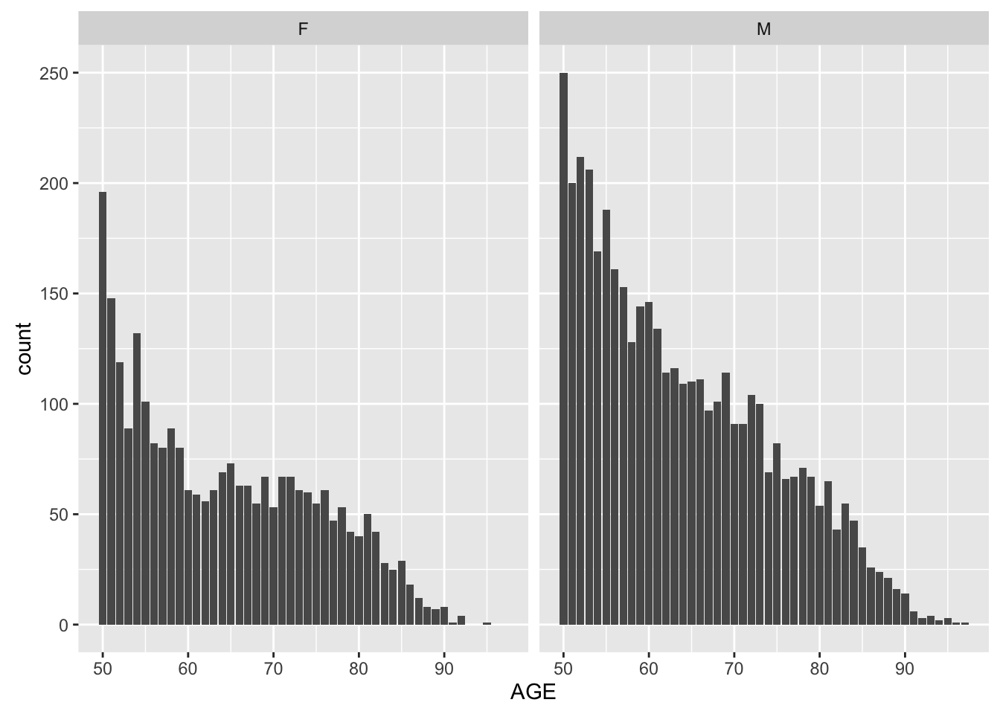
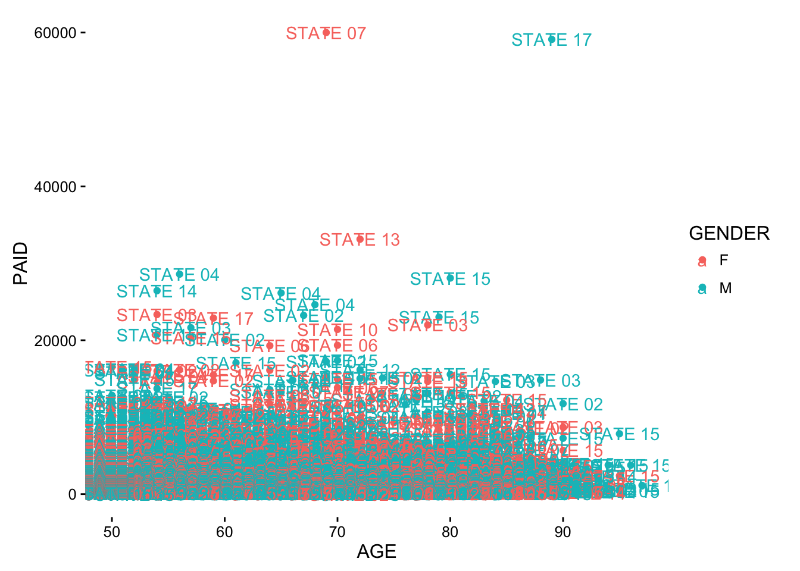

Chapter 5 Visualization
5.1 Introduction
Data Visualization allows for the effective translation of data and processes into business applicable decisions that can explain key metrics. Ploting data prior to analysis can give key insights on variables and distributions.
5.2 Exploratory Visualization
Exploratory visualization involoves learning descriptive details prior to modeling efforts. Preemptive results from visualizing distributions can lead to more informed approachs in variable transformation, error distribution selection, parameter tunning.
5.2.1 ggplot2
ggplot2: An implementation of the grammar of graphics in R. It combines the advantages of both base and lattice graphics: conditioning and shared axes are handled automatically, and you can still build up a plot step by step from multiple data sources. It also implements a sophisticated multidimensional conditioning system and a consistent interface to map data to aesthetic attributes.
5.2.1.1 Examples:
library(ggplot2)
library(insuranceData)
data("AutoClaims")
head(AutoClaims)## STATE CLASS GENDER AGE PAID
## 1 STATE 14 C6 M 97 1134.44
## 2 STATE 15 C6 M 96 3761.24
## 3 STATE 15 C11 M 95 7842.31
## 4 STATE 15 F6 F 95 2384.67
## 5 STATE 15 F6 M 95 650.00
## 6 STATE 15 F6 M 95 391.12g <- ggplot(AutoClaims, aes(x = AGE)) +
geom_bar() +
facet_grid(. ~ GENDER)
g
library(ggplot2)
library(insuranceData)
g2 <- ggplot(AutoClaims, aes(x = AGE, y = PAID, color = GENDER)) +
geom_point() +
geom_text(aes(label = STATE)) +
theme_classic()
g2
5.3 Interactive Visualization
5.3.1 plotly
plotly: Easily translate ‘ggplot2’ graphs to an interactive web-based version and/or create custom web-based visualizations directly from R. Once uploaded to a ‘plotly’ account, ‘plotly’ graphs (and the data behind them) can be viewed and modified in a web browser.
5.3.1.1 Examples
suppressPackageStartupMessages(library(plotly))
library(insuranceData)
data("AutoCollision")
head(AutoCollision)## Age Vehicle_Use Severity Claim_Count
## 1 A Pleasure 250.48 21
## 2 A DriveShort 274.78 40
## 3 A DriveLong 244.52 23
## 4 A Business 797.80 5
## 5 B Pleasure 213.71 63
## 6 B DriveShort 298.60 171plot_ly(AutoCollision, x = Severity, y = Claim_Count, mode = "markers",
color = Severity, size = Severity)